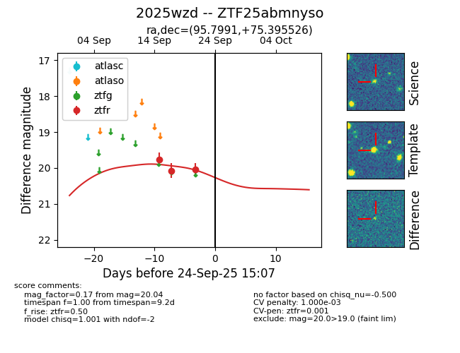
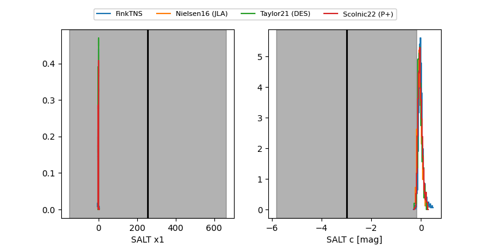

FINK: ZTF25abmnyso
Lasair: ZTF25abmnyso
ALeRCE: ZTF25abmnyso
TNS: 2025wzd
YSE: 2025wzd
ZTF25abmnyso (ztf,fink)
2025wzd (tns,yse)
equatorial (ra, dec) = (95.7991,+75.39553)
galactic (l, b) = (138.8851,+24.43546)


last ztfr=20.04
3 ztfr detections